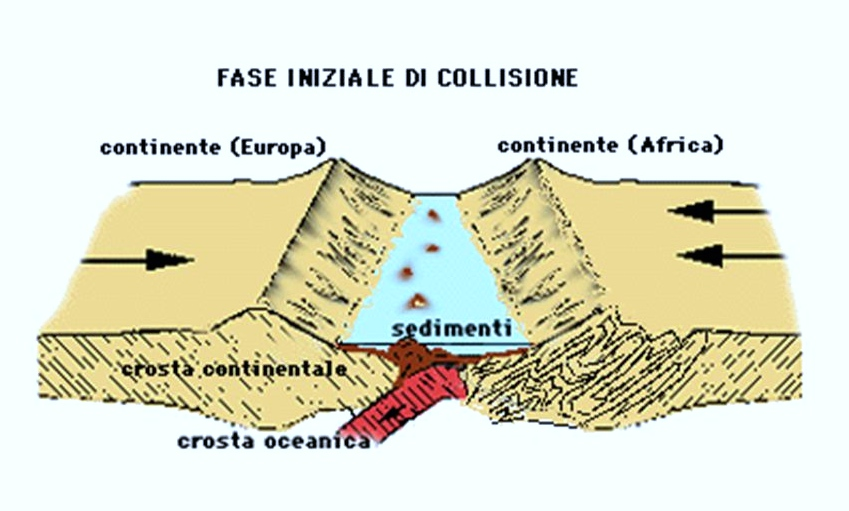

le dolomiti originariamente non erano una catena montuosa come invece appaiono oggi, bensì costituivano il fondale di un mare tropicale di circa 250 milioni di anni fa:caldo e poco profondo ma spesso sconvolto da violente eruzioni vulcaniche. A causa della collisione tra la placca tettonica europea e africana emerse poi una primordiale catena montuosa di altezza media superiore ai 3000m. Con il passare dei millenni, a causa degli agenti atmosferici, le dolomiti assunsero il loro aspetto odierno.
i numerosi resti di conchiglie e di gusci che sono stati ritrovati nella dolomia, la roccia che costituisce le dolomiti, sono dovuti proprio al fatto che la barriera corallina, innalzandosi, ha trascinato con sè tutte le forme di vita che erano presenti, imprigionandole nella roccia e creando dei fossili
Le Dolomiti sono formate principalmente da dolomia, una roccia sedimentaria carbonatica, costituita principalmente dal minerale dolomite. La dolomite è un carbonato doppio di calcio e magnesio. La particolare composizione chimica della dolomia conferisce alle Dolomiti il loro caratteristico colore pallido e il fenomeno dell'enrosadira, un effetto di colore rosato e viola alle vette al tramonto.